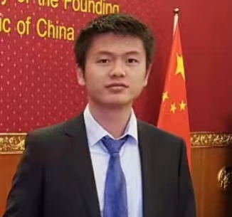
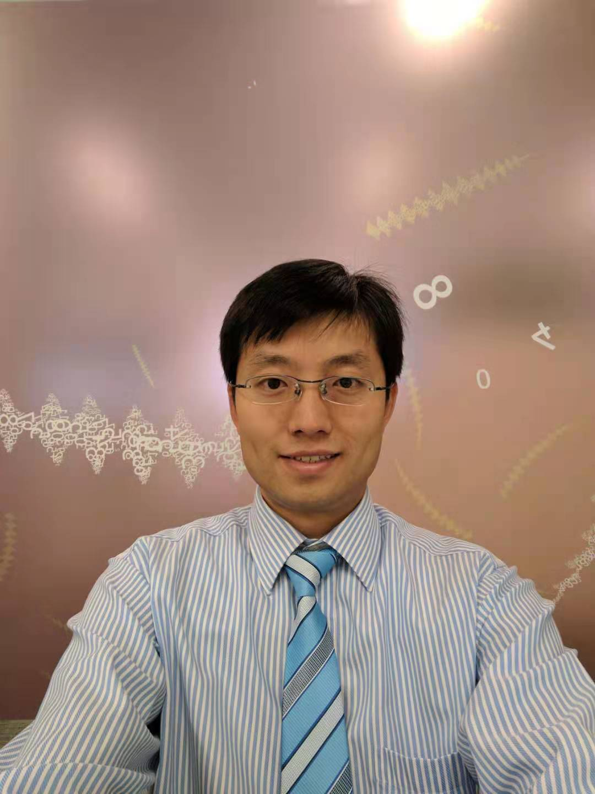


<!DOCTYPE html>
<html>

<head>
    <meta charset="utf-8">
    <meta http-equiv="X-UA-Compatible" content="IE=edge">
    <title>澳大利亚首都海外留学生关爱中心</title>
    <meta name="google-site-verification" content="SJfHXiANvjFQ51H5dv7w7sQnytimjc-wdzV06mU1XFQ" />
    <meta name="description" content="An interactive getting started guide for Brackets.">
    <link rel="stylesheet" href="css/main.css">
</head>
<body>
    <header>
        <ul>
            <li><a href="home.html">首页</a></li>
            <li><a href="detail.html">人员简介</a></li>
            <li><a href="activity.html">活动</a></li>
            <li><a href="GW.html">学生顾问</a></li>
            <li><a href="news.html">实时报道</a></li>
            <li><a href="hanfu.html">汉服文化</a></li>
             <li><a href="揭幕.html">揭幕仪式庆典</a></li>
            <li><a href="wszn.html">中澳五十周年庆典</a></li>
              <li><a href="文化宣传.html">文化宣传</a></li>
            <li><a href="疫情监测.html">疫情监测</a></li>
            <li><a href="yxwh.html">元宵晚会</a></li>
                                    <li><a href="dw.html">疫情端午特别报道</a></li>
                                                 <li><a href="关爱中心分部.html">关爱中心分部</a></li>


        </ul>
    </header>

    <h1>人员介绍</h1>
    <h2>创始人</h2>
    
    <h3>李梦 Tina. 澳大利亚Diamondream创始人, <br/>澳大利亚首都海外留学生关爱中心创始人,澳大利亚首都海外留学生关爱中心终身名誉主席。<br/>乐于助人,致力于公益事业</h3>
    <h2>主席</h2>
    
    <h3>朱家仪 Jiayi 2025年7月25日新任主席，13岁随家人移居澳洲。现就读于堪培拉大学。现任中学教师，多才多艺的女孩，热心公益，乐于助人。是传播汉服文化的达人！</h3>
        
    
   <! -- <h2>副主席</h2>
    
    <h3>洪家诚， 毕业于堪培拉大学， 软件工程专业， 堪培拉大学中国学生学者联谊会负责人， 堪称圈负责人 </h3> -->
    
    
    <! -- <h2>秘书长</h2>
     
     <h3>朱家仪 Jiayi   13岁随家人移居澳洲。现就读于堪培拉大学。多才多艺的女孩，热心公益，乐于助人。是传播汉服文化的达人！ </h3> -->
     
     
                
                 


    
    
    
   
    <div class="wrapper2">
        <div class="content">
            <div class="box2">  
                <div class="box-item two2">
                     <h2>财长</h2>
                    
                    <h3>Jing Gu, 已来澳洲17年，毕业于ANU 双硕士荣誉学位。现就任于国际IT咨询公司， 是一个致力于创造均等机会，乐于帮助的人</h3>
                </div>
                <div class="box-item two2">
                    <h2>执委</h2>
                    
                    <h3>涂俊禹 Tony 高中Canberra College,现就读于UNSW civi engineering。<br/>（悉尼联络处）</h3>

                </div>

            </div>
        </div>
    </div>
    <div class="wrapper2">
        <div class="content">
            <div class="box2">
                <div class="box-item two2">
                     <h2>执委</h2>
                    
                    <h3>刘一泽 Leo 高中毕业于Lake Ginninderra College。现在就读于University of Canberra工程管理专业。乐观开朗，面对生活积极向上</h3>
                </div>
                <div class="box-item one2">
                     <h2>执委</h2>
                    
                    <h3>王爱雯 Evan 现就读于ANU的Master of computing专业， 是一个每天struggling于coding的前商科学姐 </h3>
                </div>


            </div>
        </div>
    </div>


    <footer>
        <div class="fot">
            可以通过微信和邮箱进一步与我们联系<br />
            邮箱：ahwlxsgazx@hotmail.com<br />
            <br />
        </div>
    </footer>
</body>
</html>
